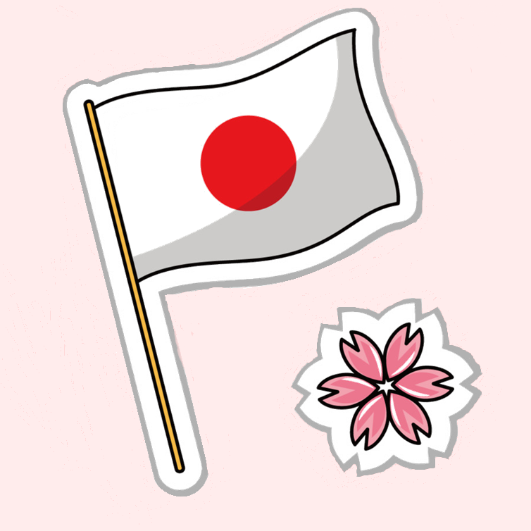
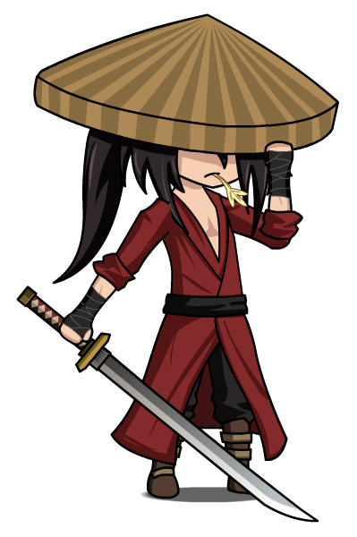
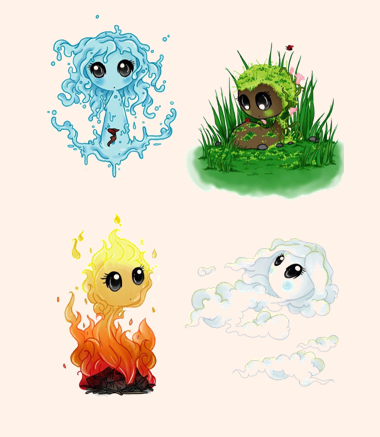
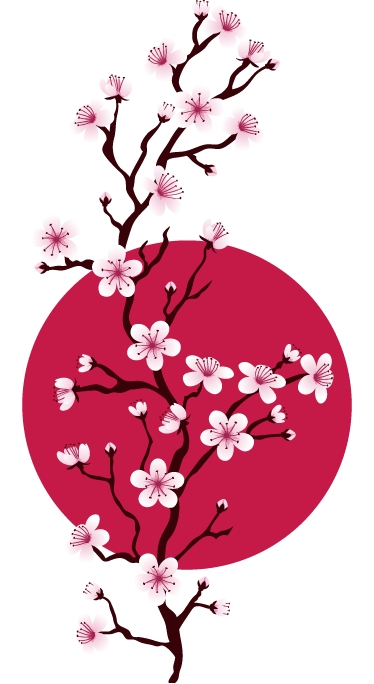

Le Japon, (aussi appelé Pays du Soleil Levant) est un pays d’Asie dont la capitale est Tokyo. Le Japon est habité par environ 127 millions de japonais.
La préhistoire japonaise commence avant le IXe millénaire. Dès 7 500 av. J.C., le Japon connait une civilisation de chasseurs-pêcheurs-cueilleurs pratiquant la poterie. Au IIIe siècle av. J.C., le Japon est envahi par des peuples venus de Corée et de Chine du Sud qui apportent la culture du riz. Au IIIe siècle, de nouveaux envahisseurs venus de Corée dominent le Japon. Ils apportent le bouddhisme et l’écriture chinoise. Du milieu du XIe siècle à la fin du XIIIe siècle, les Japonais commencent à accepter la présence des Chinois.
 Du début du XIe siècle au milieu du XIVe siècle, une classe militaire (les daimyos et les samouraïs) apparaît et s’impose. A côté de l’empereur, réduit à un rôle religieux, les grands clans (familles possédant des terres et des vassaux en grand nombre) se partagent le pays et se disputent le gouvernement ainsi que le titre de Shogun. Ce sont les Fujirawa (jusqu’à 1185) puis les Hojo qui font face avec succès à des tentatives d’invasion chinoise (1274 et 1281). A partir de la fin du XIVe siècle, pendant le gouvernement des Ashikaga, les seigneurs s’emparent du pouvoir et se font des guerres continuelles.
A partir du milieu du XVIe siècle, trois dictateurs successifs arrivent à éliminer les grands seigneurs et à unifier le Japon. A cette époque, les européens abordent le Japon et tentent d’y implanter le catholicisme. Les shoguns Tokugawa, qui ont dirigé le Japon de 1600 à 1867, ferment le pays aux influences européennes et stabilisent la société par un système féodal. Cependant, dès le début du XIXe siècle, la pression des Occidentaux se fit plus forte. En 1853, les Américains obtiennent par la force l’ouverture de certains ports japonais. Cette capitulation face aux étrangers provoque la colère du peuple japonais qui renverse le shogun en 1867. L’ empereur Mitsu-Hito prend alors le pouvoir. C’est le début de l’air Meiji qui va moderniser le Japon.
En 1940, le Japon essaie de prendre le contrôle de certains pays comme l’Indochine française, et menace la Birmanie et l’Indonésie néerlandaise. Cela inquiète les Etats Unis qui vont tenter de freiner l’expansion japonaise dans le Pacifique. L’attaque surprise des japonais contre la base aéronavale américaine de Pearl Harbor, dans les îles Hawaï, le 7 décembre 1941 plonge les Etats Unis et les Japonais dans une guerre. Profitant de la paralysie provisoire des Etats Unis, le Japon continue ses conquête en s’attaquant à l’Australie et aux Indes Britanniques. Mais à partir de la bataille de Midway (juin 1942) et de la bataille de Guadalcanal (août 1942), les Etats Unis commencent à repousser lentement et très difficilement les japonais vers leur archipel. Le Japon ne semble quand même pas décidé à arrêter la guerre. Les Américains lancent alors deux bombes atomiques sur le Japon (Hiroshima le 6 août 1945 et Nagasaki le 9 août 1945). L’empereur du Japon ordonne la capitulation qui a lieu le 2 septembre 1945.
A la fin de la guerre, l’économie japonaise, dévastée, connut une inflation galopante. Un programme de reconstruction fut mis en place et la fin des années 50 fut marquée par la prospérité économique et une croissance rapide.


Le Japon est un archipel situé au large de la côte pacifique de l'Asie (Asie de l'Est), bordé par la mer du Japon à l'ouest et l'océan Pacifique à l'est. Les principales îles sont, en partant du nord : Hokkaidō, Honshū (l'île principale), Shikoku et Kyūshū, prolongée au sud par les îles Ryūkyū dont fait partie l'île d'Okinawa. Plusieurs litiges frontaliers perdurent avec la Russie, la Corée du Sud et la Chine. De par ses nombreuses côtes, le Japon profite d'une des plus grandes zones économiques exclusives au monde.
 C'est un archipel volcanique et fortement montagneux, ce qui a pour conséquence une répartition inégale de la population sur le territoire, principalement regroupée le long de la mégalopole japonaise. La deuxième conséquence notable est la forte activité sismique, ces îles étant également touchées par les tsunamis.
 Dans la moitié nord, le climat est continental acadien, et subtropical humide au sud, bien que l'on note de fortes différences selon la côte et le relief. Ces différences de climats et de reliefs ont permis le développement d'une faune et d'une flore variée, avec certaines espèces endémiques rares ou disparues, notamment sur l'archipel d'Ogasawara.
Le pays est découpé en 47 préfectures, parfois appelés départements, ayant remplacé les anciennes provinces du Japon, puis divisé en près de 1 800 municipalités.